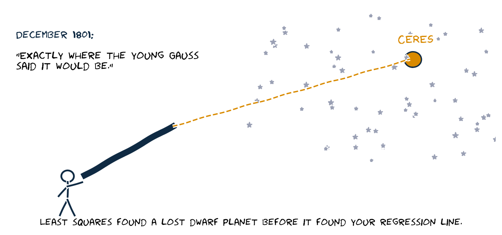
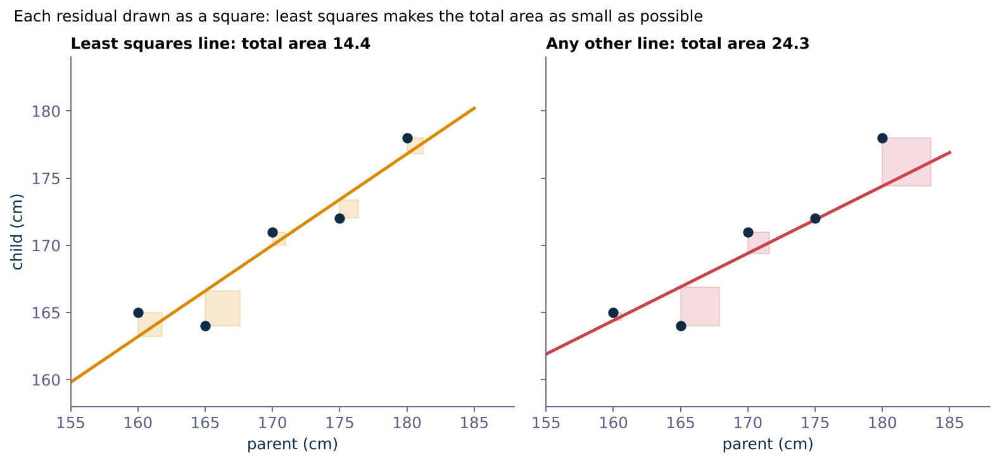
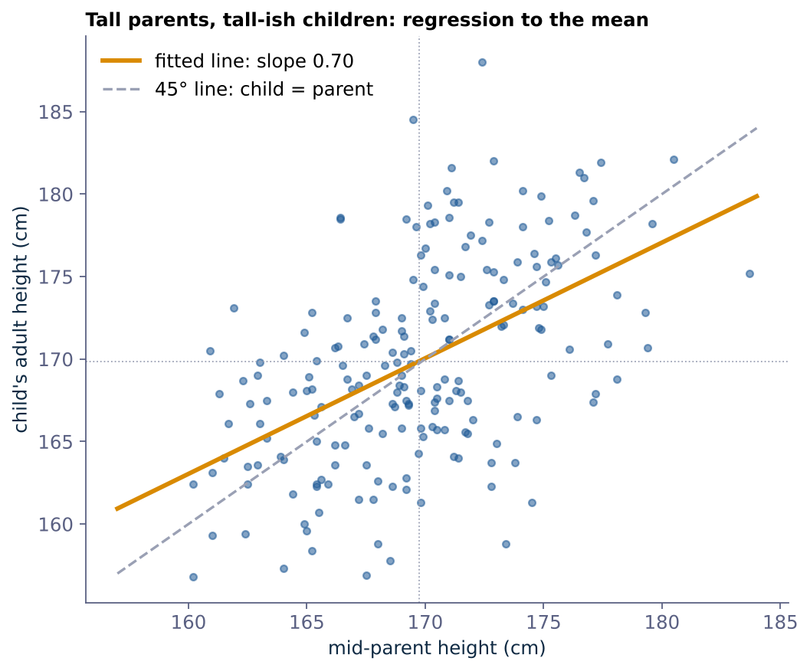

Drawing the Best Line: The Idea of Regression
Why is it called "regression"? Nothing in "fit a straight line through some points" sounds like going backwards. The answer involves a Victorian gentleman who measured everything, a lost dwarf planet, and a bitter argument about who invented the method you use every day.
This chapter builds regression from scratch: the idea, the derivation of the coefficients in a few honest steps, a calculation you can do on paper, and the same thing in EViews.
Part I · Getting Started · Chapter 2 of 2
1. Hypothesis testing · 2. The idea of regression · then on to Part II: Foundations
Data: blog_datasets.xlsx, sheet P0B_regression · Simulated, 200 families · EViews program
Download this chapter's data: P0B_regression.xlsx
Francis Galton, the man who measured everything
Sir Francis Galton, a half-cousin of Charles Darwin, could not stop measuring. He devised a system for classifying fingerprints. He published the first newspaper weather map, in The Times in 1875. In 1906, at a livestock show in Plymouth, he collected 787 guesses of the weight of an ox. The middle guess was 1,207 pounds; the real weight was 1,198 pounds. The crowd, taken together, was almost exactly right. He wrote it up in Nature as "Vox Populi", the voice of the people.
He also collected the heights of hundreds of parents and their adult children. And he noticed something odd. Very tall parents had children who were tall, but on average not quite as tall as the parents. Very short parents had children who were short, but not quite as short. Children's heights seemed to move back towards the average.
In 1886 he called this "regression towards mediocrity in hereditary stature". The word regression (going back) stuck, first to the phenomenon, then to the method he used to measure it. Today we'd call it regression to the mean, and you'll see below that it falls straight out of the formula.
Gauss, Legendre and the lost dwarf planet
The method itself is older. On 1 January 1801, the astronomer Giuseppe Piazzi discovered a new object, Ceres, and tracked it for about 40 days before it disappeared into the glare of the Sun. Astronomers had only a few observations and no way to work out where it would reappear.
A 24-year-old mathematician, Carl Friedrich Gauss, fitted an orbit to those few observations by choosing the orbit that made the sum of squared errors as small as possible. In December 1801, Franz Xaver von Zach found Ceres again, close to where Gauss said it would be.

The French mathematician Adrien-Marie Legendre published the method of least squares first, in 1805. In 1809 Gauss published his own account and claimed he had been using it since 1795. Legendre was not amused, and the priority dispute lasted for years. Every time you run ls in EViews, you are using the method two of the greatest mathematicians in history argued over.
The idea: the line that misses least
We have pairs of observations: a parent's height \(x_i\) and the child's height \(y_i\). We want a straight line
For each family, the residual is the miss: \(e_i = y_i - \hat y_i\). Some misses are positive, some negative. To avoid cancelling, we square them and choose the line that makes the sum of squared residuals as small as possible:
Why squares? They punish big misses more than small ones, they make the mathematics easy, and (as Gauss showed) they give the best answer when the errors are normally distributed. Here is the idea as a picture: each residual drawn as a square. The least-squares line has the smallest total area of all possible lines.

Deriving the coefficients, step by step
To find the minimum, take the derivative with respect to each coefficient and set it to zero, just as you find the bottom of a valley.
Step 1: the derivative with respect to \(a\).
Divide by \(n\):
So the line always passes through the point of means \((\bar x, \bar y)\). A lovely fact to remember.
Step 2: the derivative with respect to \(b\).
Step 3: substitute \(a = \bar y - b\bar x\) and tidy up:
Because \(\sum \bar x (y_i - \bar y) = 0\) and \(\sum \bar x (x_i - \bar x) = 0\), we can replace \(x_i\) by \((x_i - \bar x)\) at the front:
These two equations from Steps 1 and 2 are called the normal equations.
Step 4: read it in plain words. Divide the top and bottom by \(n-1\):
The slope is "how much \(x\) and \(y\) move together", divided by "how much \(x\) moves on its own".
With many regressors: the matrix version (click to open)
Stack the observations into a vector \(y\) and a matrix \(X\) whose first column is ones. The same minimisation gives the normal equations \(X'X\,\hat\beta = X'y\), so
This is the formula EViews uses for every ls command in this blog. When two columns of \(X\) are nearly the same, \(X'X\) is nearly impossible to invert; that is multicollinearity (Two Friends Who Always Arrive Together). When they are exactly the same, it cannot be inverted at all; that is the dummy variable trap (The Monsoon Dummy).
Do it by hand: five families
| Family | Parent \(x\) | Child \(y\) | \(x - \bar x\) | \(y - \bar y\) | \((x-\bar x)(y-\bar y)\) | \((x-\bar x)^2\) |
|---|---|---|---|---|---|---|
| A | 160 | 165 | -10 | -5 | +50 | 100 |
| B | 165 | 164 | -5 | -6 | +30 | 25 |
| C | 170 | 171 | +0 | +1 | +0 | 0 |
| D | 175 | 172 | +5 | +2 | +10 | 25 |
| E | 180 | 178 | +10 | +8 | +80 | 100 |
| Sum | 850 | 850 | 0 | 0 | 170 | 250 |
The means are \(\bar x = 850/5 = 170\) and \(\bar y = 850/5 = 170\). Then
The fitted line is \(\hat y = 54.4 + 0.68\,x\). For family A, the fitted height is \(54.4 + 0.68 \times 160 = 163.2\) cm, and the residual is \(165 - 163.2 = 1.8\) cm. The five squared residuals add up to 14.4. Try any other line you like: you will not beat 14.4. (In the picture above, another reasonable-looking line gives 24.3.)
The data: 200 families
The sheet P0B_regression has the mid-parent height (the average of the two parents) and the adult child's height for 200 imaginary families, in centimetres.
ls child c parent
Dependent Variable: CHILD
Method: Least Squares
Date: 10/27/26 Time: 21:45
Sample: 1 200
Included observations: 200
==============================================================================
Variable Coefficient Std. Error t-Statistic Prob.
==============================================================================
C 50.87269 14.16403 3.591682 0.0004
PARENT 0.701049 0.083422 8.403670 0.0000
==============================================================================
R-squared 0.262904 Mean dependent var 169.8610
Adjusted R-squared 0.259181 S.D. dependent var 6.145029
S.E. of regression 5.289078 Akaike info criterion 6.179115
Sum squared resid 5538.921 Schwarz criterion 6.212098
Log likelihood -615.9115 Hannan-Quinn criter. 6.192462
F-statistic 70.62166 Durbin-Watson stat 1.869543
Prob(F-statistic) 0.000000
==============================================================================
Reading the table line by line:
- PARENT = 0.70: comparing two families whose parents differ by 10 cm in height, the children differ by about 7 cm on average.
- C = 50.9: the intercept. On its own it means little (no parents are 0 cm tall). It simply positions the line so that it passes through the means: \(169.86 = 50.87 + 0.701 \times 169.73\). ✓
- Std. Error = 0.083: how much the slope would vary from sample to sample. A 95% confidence interval is \(0.70 \pm 1.97 \times 0.083\), or 0.54 to 0.87.
- t-Statistic = 8.40: the slope divided by its standard error, testing \(H_0\): slope = 0 (see Chapter 1). Height is clearly inherited.
- R-squared = 0.26: parents' height explains about a quarter of the variation in children's height. The rest comes from everything else: nutrition, luck, genes not captured by the average. (R-squared Is Not a Report Card explains why a low R-squared is fine.)

Regression to the mean, explained by the formula
The slope is 0.70, not 1. Is that a real difference? Test \(H_0\): slope = 1. The t-statistic is \((0.701 - 1)/0.083 = -3.58\), p = 0.0004. So yes: children of parents 10 cm above average are, on average, only about 7 cm above average themselves.
Why? Rewrite the slope using the correlation \(r\) and the standard deviations:
In standardised units (measuring both heights in standard deviations from their means), the slope is just \(r\), and \(r\) is always between −1 and 1. Unless the relationship is perfect, an observation that is 2 standard deviations above average in \(x\) is predicted to be only \(2r\) standard deviations above average in \(y\). Here \(r = 0.51\). That is Galton's regression to the mean, and it has nothing to do with biology; it happens whenever two variables are imperfectly correlated.
The funniest proof: regress the parents on the children (ls parent c child):
Dependent Variable: PARENT
Method: Least Squares
Date: 10/27/26 Time: 21:45
Sample: 1 200
Included observations: 200
==============================================================================
Variable Coefficient Std. Error t-Statistic Prob.
==============================================================================
C 106.0286 7.585006 13.97871 0.0000
CHILD 0.375015 0.044625 8.403670 0.0000
==============================================================================
R-squared 0.262904 Mean dependent var 169.7290
Adjusted R-squared 0.259181 S.D. dependent var 4.494425
S.E. of regression 3.868389 Akaike info criterion 5.553503
Sum squared resid 2962.958 Schwarz criterion 5.586486
Log likelihood -553.3503 Hannan-Quinn criter. 5.566851
F-statistic 70.62166 Durbin-Watson stat 1.743149
Prob(F-statistic) 0.000000
==============================================================================
The slope is 0.375, also much less than 1. Tall children have parents who are tall, but not as tall! If regression to the mean were a biological force, it could not work in both directions. It is just statistics.
The regression fallacy
A cricket team plays badly, the coach is sacked, and results improve. A student scores very high on one test and lower on the next. Before crediting the new coach or blaming the student, remember Galton: extreme results tend to be followed by less extreme ones, even when nothing at all has changed.
When is OLS the best? A road map for this blog
Under a set of assumptions, the Gauss-Markov theorem says that OLS is the Best Linear Unbiased Estimator: BLUE. Each assumption that fails has its own chapter on this blog:
| Assumption | When it fails | Chapter |
|---|---|---|
| The model includes all relevant variables correlated with \(x\) | Biased slopes | Omitted variables |
| \(x\) is measured accurately | Slopes shrink towards zero | The Noisy Ruler |
| No exact linear relations among regressors | Imprecise or impossible estimates | Multicollinearity, the dummy trap |
| Errors have constant variance | Wrong standard errors | Heteroskedasticity |
| Errors are not correlated over time | Wrong standard errors | Autocorrelation |
| The relationship is stable | One line for two worlds | Structural breaks |
| The variables are stationary | Nonsense results | Spurious regression, Unit roots |
The lesson
Regression draws the line that misses least, in the squared sense. Its slope is covariance over variance, the line passes through the means, and because correlations are less than one, predictions always lean back towards the average. Galton named it, Gauss and Legendre fought over it, and the rest of this blog is about what can go wrong with it.
Something to think about
A study finds that schools with the worst exam results last year improved the most this year, after a new tutoring scheme. Before praising the scheme, what would Galton say? How could you design the study to tell the scheme's effect apart from regression to the mean? Answer in the comments.